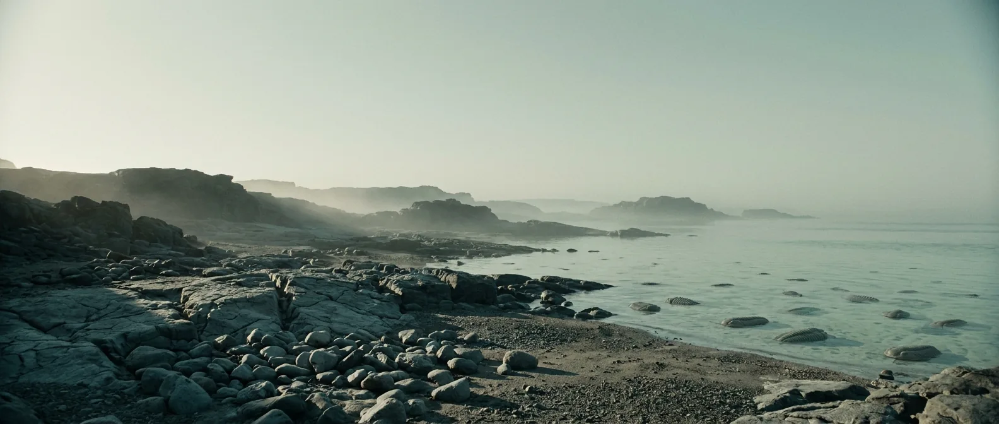
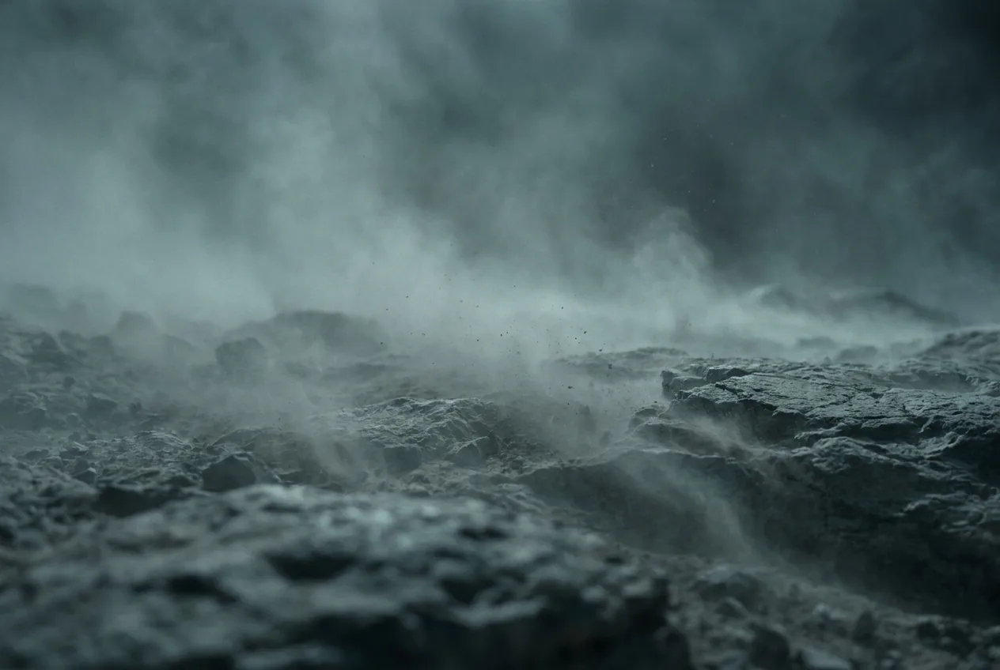
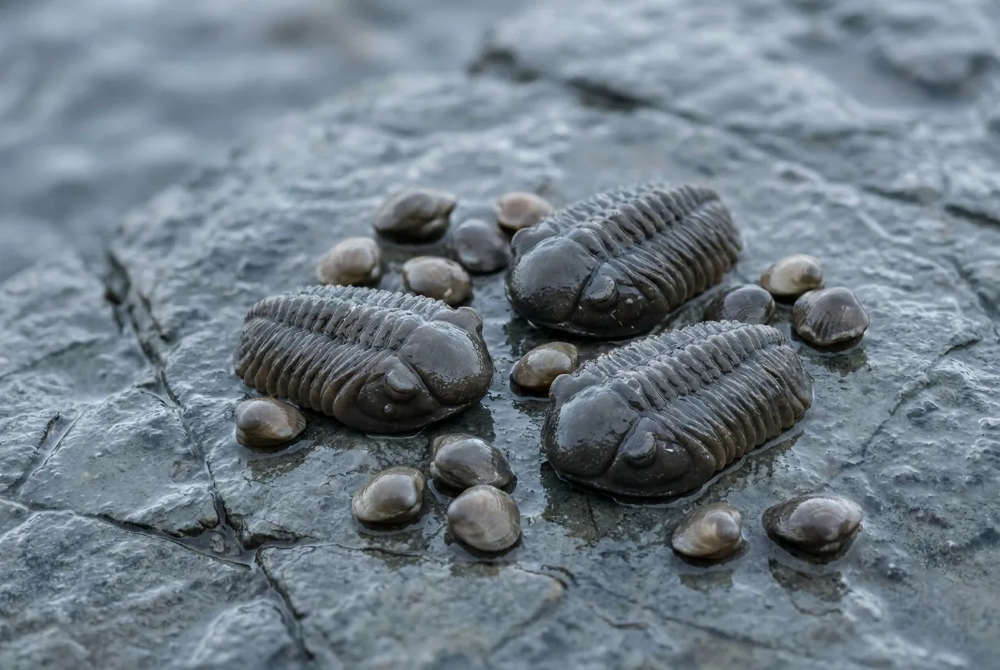

Every major animal body plan alive today appears in this window, most of them within about 20 million years. All of it happens in the sea. Stand on the shore with your back to the water and you are looking at a landscape as sterile as Mars.
The atmosphere stops being the thing that kills you, which is a first. What replaces it is starvation, because everything edible on this planet is underwater and you have no way to cook, dry, store or shelter.

Scale 0–40%. Borderline. At the low end you are permanently at 4,000 m; at the high end you are merely short of breath. Either way you can function.
Scale 0–4,000 ppm; today ~425. Ten times modern. Not acutely toxic, but combined with low O₂ it makes every exertion feel heavier than it is.
Scale −20 to 250 °C. Warm, no polar ice, sea levels high. The climate is the least of your problems here.
There are no land plants of any kind. No wood, no fibre, no thatch, no fuel, no fruit, no roots. The single defining fact of Cambrian survival.
Scale 0–24 h. Roughly 408 days per year. Sleep debt compounds slightly faster than you are built for.
Scale 0–30 m. The apex predator of the entire planet would fit in a bathtub, and it cannot leave the water.

Four billion years into this list, the air works. It feels like arriving at a mountain resort: winded on the slightest climb, a headache building, but functional and improving over days as you acclimatise.
Not because of the oxygen. Because there is nothing to burn. No wood, no grass, no peat, no dung. You cannot boil water, cannot cook, cannot dry anything, cannot stay warm at night. Every downstream problem traces back to this.
No shelter material exists either. Rock overhangs and hollows are the entire inventory. Wet and windy nights on bare stone with no fire cost you more energy than the shellfish are giving back.
Trilobites, brachiopods and worms, eaten raw. Calorically thin, close to zero fat and zero carbohydrate, and every meal must be caught fresh because there is no way to preserve anything.
A diet of nothing but lean protein fails at around 35% of calories: the liver cannot convert nitrogen fast enough, and the result is weakness, diarrhoea and death within weeks even while eating. Historically it killed explorers who had meat and nothing else. Here you have shellfish and nothing else.
Longer than three weeks needs fat, and the Cambrian has almost none.

Thin but workable. Expect a week of altitude-style headaches, then adaptation.
Rain and streams, entirely free of anything that can infect a mammal. The cleanest drinking water in Earth's history.
Marine only, protein only. The tidal zone is crowded and easy to harvest; that is not the problem.
No fuel exists on the planet. This is the constraint everything else follows from.
Rock only. No wood, no thatch, no hide worth the name.
None on land. Nothing has legs yet.